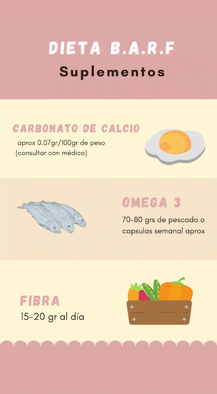

¡Calcula la ración de tu peludo!
Para poder administrar una dieta natural de forma adecuada, es necesario que tomemos en cuenta ciertas cosas como:
-
Condición corporal
Se determina obsevando y palpando el cuerpo de tu peludo. Puede ser de bajo peso (costillas visibles, sin grasa palpable, curvatura abdominal visible), peso ideal (bien proporcionado, costillas palpables pero con grasa y no son visibles) o de sobrepeso (costillas que no se palpan facilmente por la grasa, no se ve la curvatura abdominal, abdomen abultado). Es necesario que determines la condición corporal de tu peludo porque de ella se parte para la ración
-
Edad
Los peludos que aún están en etapa de crecimiento tienen mayores requerimientos nutricionales que un animal en su etapa adulta.
-
Estado reproductivo
Si el animal está sin esterilizar requiere de más alimento que un animal que lo está.
-
Grado de actividad física
Si el animal es sedentario necesitará menos alimento que un animal muy activo. En ese sentido, si tu peludo convive en el interior o es de exteriores también influye en su estado físico y por tanto en la ración a calcular. Si el animal es sedentario, la ración corresponde al 3,0-3,5% por kilo de peso, es decir, entre 30-35gr de ración por peso; si el animal tiene actividad fisica media la ración corresponde al 3,5-4,0% por kilo de peso, es decir, entre 35-40gr de ración por peso, y si la actividad física es alta, la ración estaría entre el 4,0 y 5,0% de su peso, que equivalen a 40-50gr por kilo de peso.
-
Clima
Si tú y tu peludo conviven en un área con clima estacional, es posible que debas considerarlo para la ración. Cuando es temporada de invierno, el gasto energético es mayor para que tu peludo pueda conservar el calor corporal y mantenerse activo, por lo que la ración aumenta y se debe re-calcular. En temporada de calor, por el contrario, se requiere de menos alimento porque el gasto energético es menor.
Es muy importante que antes de decidir darle la ración a tu peludo consultes con un veterinario calificado en el tema. Si bien todos los datos suministrados acá sirven de aproximados para iniciar el proceso de transición, es cierto que cada animalito es diferente y tiene necesidades específicas que, si no cumplimos debidamente, pueden llevar a un proceso de enfermedad que se puede evitar con el apoyo adecuado. Teniendo eso en cuenta, te presentamos aqui unos valores estimados de lo que debe conformar la ración de tu peludo, para que vayas haciéndote a una idea de cómo debería ser.
Porcentajes de ración base
Racion aproximada de suplementos
Por si has leído las consideraciones previas y las tienes claras, te dejo acá dos video-tutoriales hechos por Jessica Da Silva, para que puedas calcular el peso de la ración diaria de tu perro o gato. No olvides fijarte con base a todo lo anterior en los porcentajes de cada producto que debes administrar